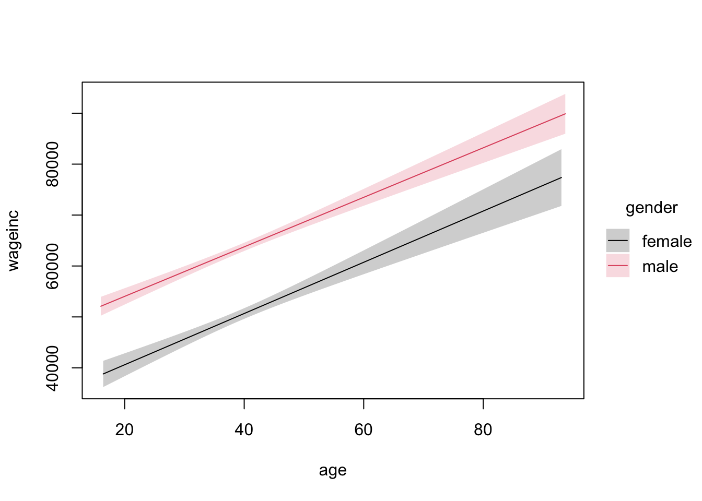

I used to use ggplot2 for almost all my plots, but lately I’ve just used base-R. The tinyplot package, an extension of base-R plots, allows me to access base-R plots in a more convenient, pleasant and intuitive manner. Advantages:
Automatic generation of legends.
Natural syntax: R ‘formula’ plus ‘|’, the latter evoking conditional probability. E.g.
specifies that we plot the conditional density of income, given gender.
One can even have e.g. ’ | U’ for a continuous U! It then means a color gradient, say for a third variable.
Easy to add to existing plot. Easy faceting.
Base-R ops still available.
(Note: the tinyplot package should not be confused with tidyplots.)
Our goal:
Here we present the main features of the tinyplot package, but importantly, not in isolation, i.e. not just the mechanics. We show how the package can be used for effective storytelling.
Most of these are named arguments; make sure you specify the names.
One can abbreviate tinyplot to plt.
Plot type can be specified either as a call, e.g. type_lm(), or via a quoted string shortcut, e.g. “lm”. Note: The type argument must come before the data argument.
Layering can be done via tinyplot_add.
Examples
The Census dataset
These are programmers and engineers in Silicon Valley in the 2000 census. Here occ is one of 6 job categories. My primary interest here is investigating possible sex discrimination in salaries. Note: Census data top-coded income at $300,000.
So, let’s try it on the svcensus dataset from my qeML package.
Men seem to have a slight edge in the middle income levels, but possibly a substantial one at the very high levels.
But of course a big factor is wkswrkd, the number of weeks worked. If there is a substantial difference between the sexes in this variable, it could bias our analysis.
Ah, yes, for those who worked most or all of the year, we see a male advantage. That is, for a given number of weeks worked, the mean salary is higher for men.
What about possible age differences?
tinyplot(wageinc ~ age | gender, data=svcensus,type='lm')

Very few elderly in Silicon Valley! Thus very wide confidence bands at the older level. Similarly, the even wider confidence band for women reflects the fact that women are less numerous in this dataset.
The conference bands are informative, but they may result in some clutter in more complicated graphs. We can suppress those bands:
tinyplot(wageinc ~ age | gender, type=type_lm(se =FALSE), data=svcensus)
A clear separation between men and women, with mean wages being consistently lower for women.
Model-free estimation of a regression function
But…should we apply a linear model so carelessly? Let’s try a model-free estimate of the regression functions, using R’s loess, which divides the X-axis into intervals and then fits a local polynomial model in each interval.
tinyplot(wageinc ~ age | gender, type=type_loess(se=FALSE),data=svcensus)
Whoa! Not linear, not even monotonic. One of the factors underlying this nonmonotonicity may be age discrimination.
Sample Size Issues
Never assume a linear model willy-nilly. While no relation in practice is exactly linear and slight discrepancies are fine, the relation may be substantially nonlinear, even substantially nonmonotonic..
At any rate, men definitely seem to be paid more, particularly in their early 40s.
Interesting! Customers from France and Germany exhibit a unimodal distribution, but those from Spain seem to follow a bimodal pattern. But this may be due at least in part to the default values. The analyst may wish to explore using nondefault values:
The higher the balance, the more likely the customer is to bolt.
The Stanford Vocabulary dataset
This is a survey of vocabulary sizes of young children.
library(qeML)data(english)head(english)
data_id age language form birth_order ethnicity sex mom_ed
1 1 24 English WS First Asian Female Graduate
2 2 19 English WS Second Black Female College
3 3 24 English WS First Other Male Some_Secondary
4 4 18 English WS First White Male Secondary
5 5 24 English WS First White Female Secondary
6 6 19 English WS First Other Female Some_College
measure vocab demo n demo_label
1 production 337 All Data 5498 All Data (n = 5498)
2 production 384 All Data 5498 All Data (n = 5498)
3 production 76 All Data 5498 All Data (n = 5498)
4 production 19 All Data 5498 All Data (n = 5498)
5 production 480 All Data 5498 All Data (n = 5498)
6 production 313 All Data 5498 All Data (n = 5498)
eng1 <- english[,c(2,5:8,10)]head(eng1)
age birth_order ethnicity sex mom_ed vocab
1 24 First Asian Female Graduate 337
2 19 Second Black Female College 384
3 24 First Other Male Some_Secondary 76
4 18 First White Male Secondary 19
5 24 First White Female Secondary 480
6 19 First Other Female Some_College 313
eng1 <- stats::na.omit(eng1)
Let’s explore the role, if any, of the mother’s educational level. For each given level, find the estimated density of vocabulary:
Graph appearance depends on sample size. If you see what appears to be an anomalous graph, check for small samples. Indeed, keep sample size in mind when noting any “interesting” plots.
Reputedly, girls are initially ahead of boys. True?
tinyplot(vocab ~ age | sex, type=type_lm(se=FALSE), data=eng2)
Yes, according to this, the girls are always somewhat ahead.
What about across ethnicities?
tinyplot(vocab ~ age | ethnicity, type=type_lm(se=FALSE), data=eng2)
The different ethnicities seem to cluster into two groups, with the disparity growing with age.
Does the mother’s educational level make a difference?
tinyplot(vocab ~ age | mom_ed, type=type_loess(se=FALSE), data=eng2)
Yes, while the initial difference is small, by age 30 months gaps have formed.
Note that, unlike our earlier example with the census data, we see that a linear model would seem to work well here, so let’switch to that.
tinyplot(vocab ~ age | mom_ed, type=type_lm(se=FALSE), data=eng2)
Use of color gradients
Illustration of the color gradient in the census data: Find the probability that a customer exits, given balance and number of products they use.
Recall that for a logistic model, glm finds the probability of “Y=1”.
The fitted values are probabilities of leaving, with dark blue representing the highest probabilities and yellow-green the lowest. Customers with a lot of products seem less likely to leave, and by the way, exhibit a narrower range in balance.
Age is always of interest:
z <-glm(Exited ~ Balance + Age,data=iranChurn,family=binomial)iranChurn$Fit <- z$fitted.valuesplt(Balance ~ Age | Fit, data=iranChurn)
Nice picture of a fish!
We see that older customers are more likely to leave, even with the same balance as younger ones.
Subtle Change in the | Operator
The following may seem to be just a mathematical nicety, but it is actually quite important.
When we first discussed the | operator, we noted that it makes sense, because | is used in probability theory for quantities like P(A|B).
Natural syntax: R ‘formula’ plus ‘|’, the latter evoking conditional probability. E.g.
specifies that we plot the conditional density of income, given gender.
Here in the current section on color gradients, we are still using | – but in the reverse direction! E.g. in the code
plt(Balance ~ Age | Fit, data=iranChurn)
we are displaying the (estimated) conditional probability of Exit, given Balance and Age. In other words, the conditioning quantity is now before the |, not after it.
Layering
Here one builds up a plot one aspect at a time, literally layer by layer. The analyst may have pre-planned this, to show the effects of adding material to a plot one step at a time, or it could arise as a sudden inspiration, “Hey, what if we add such and such?”
As an example, let’s revisit one of our earlier operations:
tinyplot(wageinc ~ age | gender, type=type_lm(se=FALSE),data=svcensus)
All is well and good, right? But…the analyst may suddenly think, “Should we be using linear models here?” He/she can then add nonparametric estimates of the curves, superimposing them on the original: